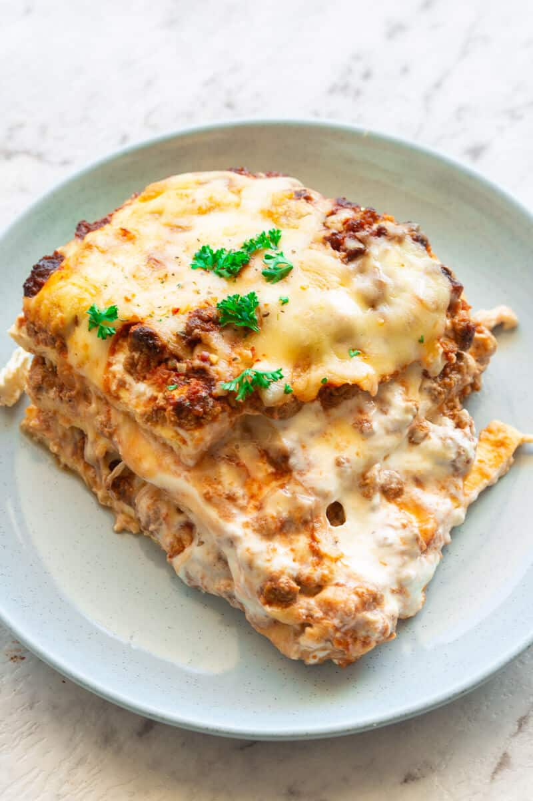

LASAGNA

DESCRIPTION
Today we are introducing you to the Keto lasagna, it taste the same as a typical lasagna but it can be consumed within a low carb diet.
Ingredients
- Cream cheese
- Mozzarella cheese
- Parmesan cheese
- Eggs
- Start by preparing your lasagna noodles. In a microwave-safe bowl, add your cream cheese, mozzarella, and parmesan.
- microwave in 30 second spurts until the mozzarella has mostly melted.
- Whisk in the eggs until a thick and creamy batter remains.
- Transfer the mixture onto a lined baking sheet and spread out into a single layer.
- Bake for 15 minutes, until it just begins to get golden around the sides.
- Heat some oil in a pan on medium heat. Once hot, add the onions and garlic and saute for 5 minutes , until fragrant.
- Add the ground beef substitute for 2-3 minutes, before adding the marinara sauce.
- Add salt and pepper to taste and continue pan frying for a further 5 minutes. Remove from the heat.
Add salt and pepper to taste and continue pan frying for a further 5 minutes. Remove from the heat.
- Start putting the lasagna together. In an 8 x 8-inch pan, add tin foil and allow half an inch overhanging from each side. Slice the lasagna sheet into 6 even pieces.
- Place two pieces on the bottom of the pan, followed by a third of the ricotta, a third of the vegetarian bolognese sauce, and a third of the mozzarella.
- Repeat to create two more layers. Bake in the oven for 30-35 minutes, until golden brown on top.